6. Predators in other students' paintings
Back to the tutorial. Code: context.py, family.py, and notes/deer_sprites.py (run from the elk student's folder).
The brief asked for two moments: a bear fishing a salmon run, and a cougar on a ledge above deer. The elk student's best image was its elk on the channel student's gravel bar, and its lesson was that a figure belongs in a picture when it obeys the picture's light and perspective, not when it's painted better. This page is how I did that in three paintings I didn't make, what I read off each, and where it went wrong.
Choosing the painting
I looked at what the other students had made before writing a line (nb046-049, nb054-057, nb064). The questions were: does it have somewhere my animal would actually be, at a scale where my animal reads, in a light I can match?
- The water student's Skykomish rapid at golden hour: boulders, white water, a cobble bar. That's the salmon run.
- The channel student's dusk gravel bar, the elk student's own context painting: the naturalist's cougar sighting happens on exactly such a bar at dusk.
- The rock student's granite boulder field, its own render: a cougar needs something to lie on above its prey.
Read the numbers off the other student's code
A painting is at some scale, from some camera, lit from some direction, and those numbers are in its author's code. For the rapid I read the water student's water.py and pal.py:
SCALES = {'scene': 13.0, 'landscape': 2.6, 'region': 0.9} # px per metre
class Camera:
def __init__(self, ppm, width, height, elev=30.0, ...) # iso 30
'golden': dict(..., sun_el=14, sun_az=250, ...) # "degrees clockwise from +y (the camera's forward)"
Its golden hour is a sun 14° up at azimuth 250, clockwise from the camera's forward direction. My View measures azimuth counter-clockwise from screen-right, so that's −160°: front-left, low. I put a coordinate grid over the native 320 × 200 image to choose positions by pixel:
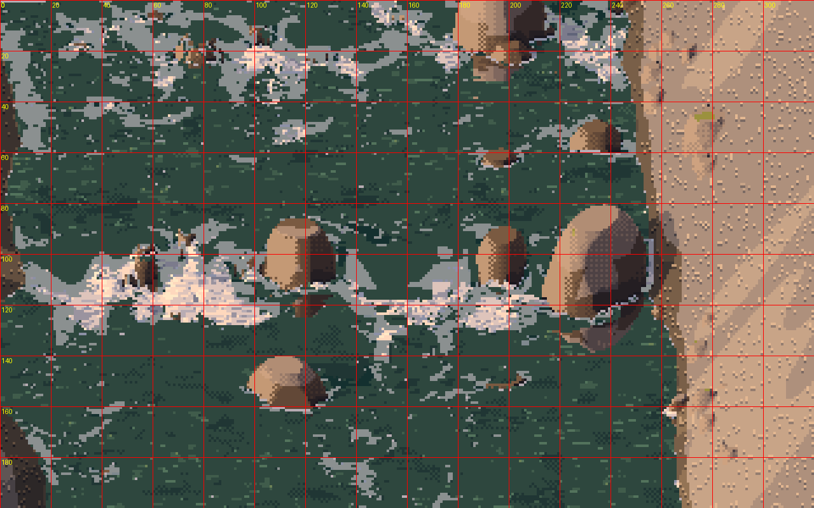
nb058. The rapid at native size with a 20-px grid. The boar goes on the big boulder at (231, 95) above the white-water sill; the sow goes on the cobble bar at (281, 132).
def rapid():
src = os.path.join(EL, "water", "out", "s4_rapid_low_scene_golden_3x.png")
big = Image.open(src).convert("RGB")
img = np.array(big.resize((big.width // 3, big.height // 3), Image.NEAREST)) # back to native pixels
k = 13.0
az, el, hour = -160.0, 14.0, "golden"
# water mask: the teal and the foam (no cast shadow on moving water)
f = img.astype(int)
water = (f[..., 1] > f[..., 0] + 8) | ((f[..., 0] > 170) & (f[..., 2] > 150) & (np.abs(f[..., 0] - f[..., 2]) < 40))
boar = rig.Individual("bear", "m", "adult", "autumn", 4)
img = paste(img, sprite(boar, "fish", 0.2, k, 198, 30, az, el, hour), (231, 95), water=None)
...
sow = rig.Individual("bear", "f", "adult", "autumn", 7)
img = paste(img, sprite(sow, "carry", 0.3, k, -55, 30, az, el, hour), (281, 132), water=water)
cub = rig.Individual("bear", "f", "young", "autumn", 71, months=9)
img = paste(img, sprite(cub, "walk", 0.7, k, -40, 30, az, el, hour), (268, 150), water=water)
sprite paints at the painting's k (px/m), not at a chosen size, so a boar, a sow and a nine-month cub come out at their true relative sizes. paste lays the cast shadow first, tinted and mixed with whatever it falls on, and never on water:
def paste(img, spr, at, shadow_tint=(40, 44, 70), shadow_mix=0.45, water=None):
rgb, on, sh, (ox, oy) = spr
x0, y0 = int(round(at[0] - ox)), int(round(at[1] - oy)) # the sprite's world origin onto `at`
ys, xs = np.nonzero(sh & ~on)
...
if water is not None:
ok &= ~water[np.clip(ys2, 0, H - 1), np.clip(xs2, 0, W - 1)]
c = img[ys2[ok], xs2[ok]].astype(float)
img[ys2[ok], xs2[ok]] = (c * (1 - shadow_mix) + np.array(shadow_tint) * shadow_mix * 0.6).clip(0, 255).astype(np.uint8)
...
The story details are the naturalist's: in November the Skokomish has fall chum, and bears "carry carcasses 10-100+ m from the stream and eat only the best parts". So there's a chum jumping at the sill below the boar, placed by hand as five pixels, and the sow is heading up the bar toward the trees. The salmon in her jaws was held crosswise like a bone until a Commons photo arrived in the last ten minutes of the study: a bear carries a chum by its back half, with the body hanging nearly to the ground.
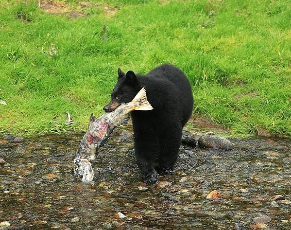
nb085. "Black Bear Caught A Salmon" (Commons). I changed the carried fish to match.
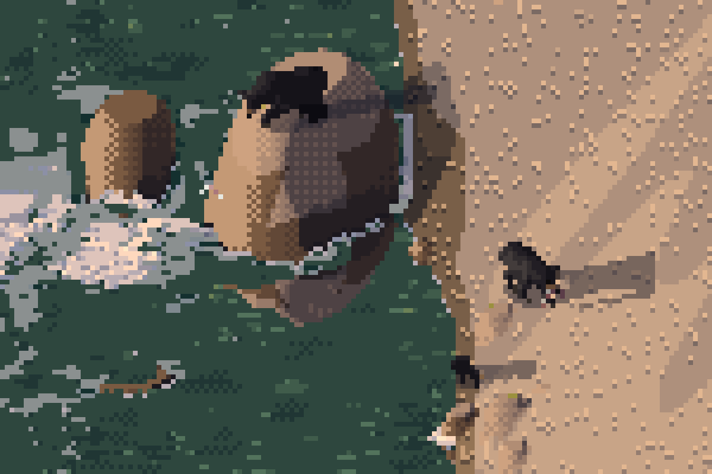
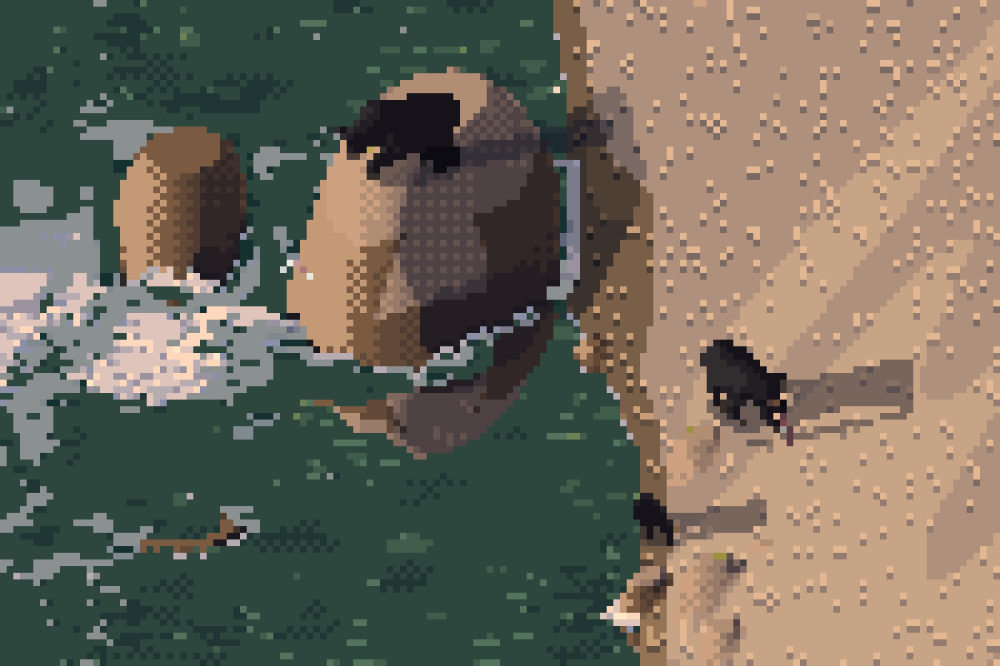
nb059, study. The first version and the final, 8×. In the first, the sow on the bar is a black splat: at 13 px/m a sow is about 15 px long, and seen from 30° up she's mostly back. The final is a little better: a better-shaped fish and a cub behind her. At this scale the boar on the boulder, a black mass against a lit rock with a brown muzzle toward the water, reads far better than the pair on the cobbles.
Dusk: borrow the other student's perspective, and check your edge rules at the new size
The elk student had already read the gravel bar's perspective off the stones: k(y) = 1 + 0.13 (y − 50) px per metre by row. I used its function unchanged, and its dusk light (sun 5° up, behind the animals):
def k_at(y): # the elk student's perspective read off the gravel
return max(0.8, 1.0 + (y - 50) * 0.13)
cast = [(106, 70, rig.Individual("cougar", "f", "adult", "autumn", 5), "walk", 0.3, -12.0),
(122, 150, rig.Individual("bear", "m", "adult", "autumn", 3), "carry", 0.55, 160.0)]
for y, x, ind, g, ph, yaw in cast:
k = k_at(y)
depth = float(np.clip((80 - y) / 40, 0, 0.7)) # haze toward the far bank
img = paste(img, sprite(ind, g, ph, k, yaw, 6.0, az, el, hour, depth=depth), (x, y), water=water)
My first placement put the cougar at row 92, where it came out 6 px long: a glyph skeleton, pointless. I moved it nearer. The back-lit bear at 14 px was a black hole, because the rim rule sat inside a size_px >= 20 block written for hero sizes. When you drop your animal into someone else's scale, it lands at sizes your sheets may never have tested in that light.
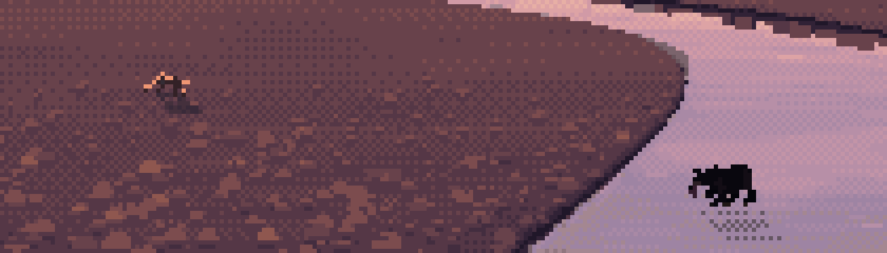
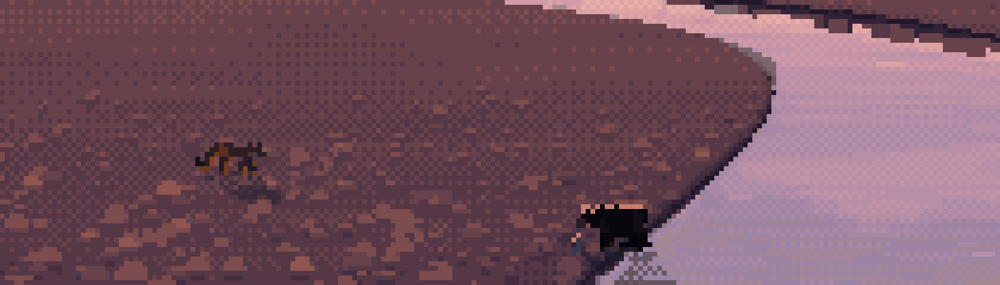
nb077, study. The dusk bar before and after: the cougar nearer (about 10 px), the bear with a rim along its back. The cougar reads by its long low shape and tail; the bear is still a crenellated box.
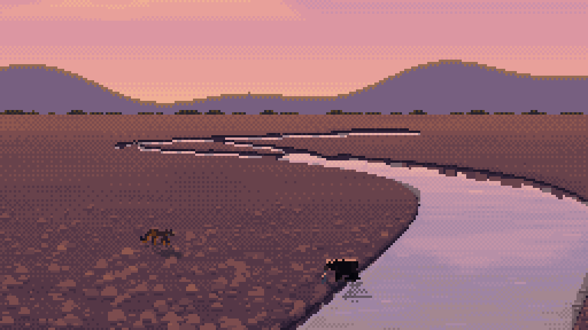
The ledge: borrow the prey from the student who owns it
Blacktail deer are the elk student's animal, and its code paints them better than anything I'd write in an afternoon. So I ran its code, from its own folder, as a subprocess, and saved the sprites to a file my compositor reads:
# notes/deer_sprites.py, run with cwd = ~/work/pixelart-studies/elements/deer-elk/src
import rig, paint, palette as P, render
render.SHADOW_REACH = 1.0
for i, (sex, age, g, ph, yaw, k) in enumerate([("f", "adult", "graze", 0.0, 20, 13), ("f", "young", "walk", 0.4, 10, 13.5),
("m", "adult", "alert", 0.0, -160, 12.5)]):
ind = rig.Individual("deer", sex, age, "autumn", 30 + i)
size = 1.62 * ind.spec().H * k # the elk student's size convention
R, _, _ = paint.paint_index(ind, g, ph, View(yaw=yaw, elev=12, sun_az=-150, sun_el=35), size_px=size)
tab = P.palette(ind, "morning", 0.12, "autumn", haze=(170, 184, 206))
...
np.savez("/tmp/seton/deer_sprites.npz", **out)
Two things to watch. The elk student's size_px means something different from mine: its body length is 1.62 H, and mine is the measured nose-to-rump length. So I converted from px/m, the one unit we share. And the painting has no perspective function, so I had to judge the depth of each spot myself, and my first judgement was wrong:
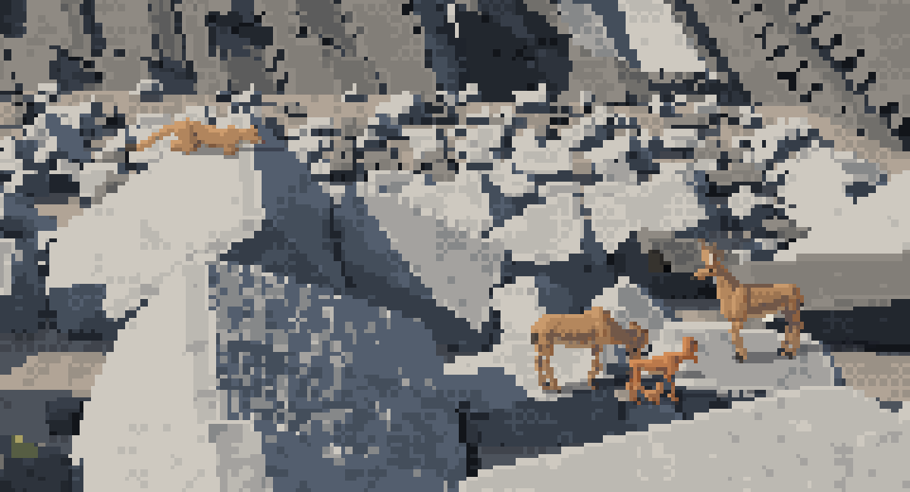
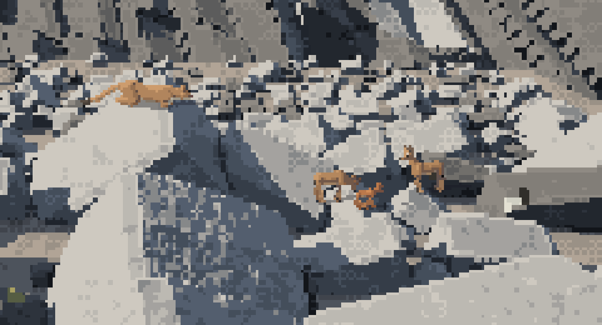
nb081, nb082. First, the deer at k = 22 placed low on the talus, twice the cat's size, a family of giants; then at k = 13 higher up the talus, behind the boulder the cat lies on (k = 23). Height in the frame is distance in this painting: the talus rises away from the camera.
The second critic noticed that the warm orange cat sat on the cool grey granite like a sticker. The painting's sky is cool, so both the cat and the deer now take it as haze (depth=0.12, haze=(170, 184, 206)), and the cat's cast shadow is darker and cooler.
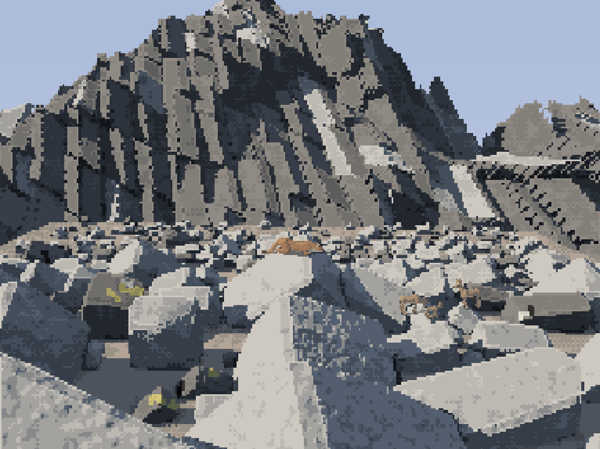
study. The final ledge piece. The deer read, in the elk student's grey autumn coats. The cougar, crouched on the crest at about 28 px, is still an orange smear: nearer, or a darker westside coat, would fix it.
Families: arrange by the naturalist's numbers, at true scale
family.py arranges a sow with cubs or a female with kittens in world metres, and paints each member at the scene's k, so sizes are true. The arrangements come from the naturalist and Seton: cubs keep within a few metres of the sow; cubs climb when alarmed while the sow waits at the base; kittens follow in file or play near their resting mother.
elif kind == "treed":
# the cubs up a trunk, the sow at its foot facing out, alert (reared up to smell)
mem.append(Member(sow, "stand_up" if rng.random() < 0.5 else "alert", 0.0, -1.2, -0.4, heading + 180 + ...))
for i, c in enumerate(cubs):
# both cubs on the same trunk, one above the other
mem.append(Member(c, "climb", 0.25 + 0.4 * i, 0.9, 0.05 * i, heading, lift=0.9 + 1.1 * i))
The cubs' size came from a measurement, not a guess, but only at the very end. My cubs were scaled at 0.45 of the sow's shoulder height at four months. A Commons photo of a sow crossing a road with three July cubs measures 0.52:

nb084. A sow and three July cubs (Commons). The cubs' shoulders are 0.52 of hers.
s = float(np.interp(m, [3, 6, 9, 16], [0.38, 0.52, 0.60, 0.75])) # measured: a July cub is ~0.52 of the sow's shoulder
The cubs also have their own proportions: heads 1.32× and legs 0.88×, ears 1.55×. Critic 2 had called the first cubs "scaled-down adults", which they were. Kittens get heads 1.3×, bolder, fewer spots, and a ringed tail until about six months (Seton).
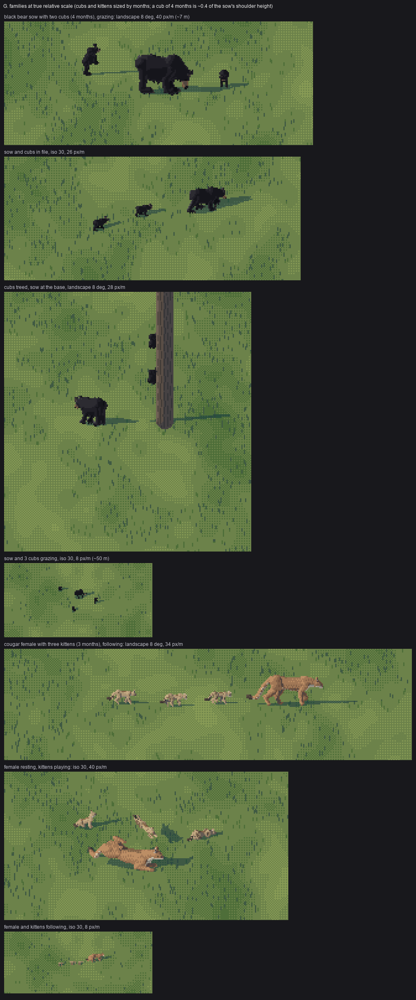
study, sheet G. A sow and two cubs grazing (40 px/m, landscape); in file (iso); treed, the sow at the base (the trunk is a real 0.25 m tree); a sow and three cubs at 8 px/m; a female cougar and three kittens following; the female resting with kittens playing; the family at 8 px/m.
Where it stops
- The cougar never became the hero of a painting. At the scales the paintings were made for (13-25 px/m), it's 15-30 px long, in the size range where it's weakest. A context piece built around a near cougar is the next one to make.
- Placement is by hand. None of the three paintings exports a height map or a depth buffer, so the animals stand where my eye says the ground is, and contacts are drawn by the cast shadow alone.
- No reflection in the water. The elk student gave its wading cow a broken mirror. My boar stands on a boulder above the water and never touches it, which was partly a way of avoiding that.